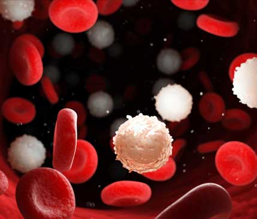
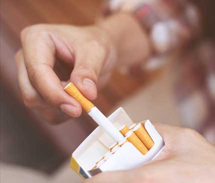
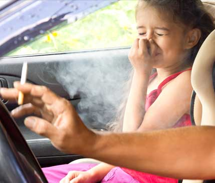
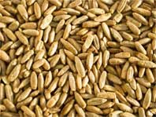
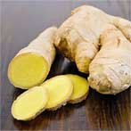

Никотин – это вещество, которое вызывает привыкание с первой дозы.
По силе воздействия на организм он превосходит даже героин, поскольку вызывает зависимость с первой затяжки.


2.
До того, как вы впервые закурили, наверняка были уверены:
Я смогу бросить в любой момент! В действительности это гораздо сложнее, чем кажется.
3.
Возможно, вы испытываете стыд или неприязнь к самому себе из-за того, что не можете бросить курить самостоятельно.
Вы постоянно слышите о вреде курения и уже выработали иммунитет к ужасающим историям курильщиков.

Запах сигарет преследует вас повсюду,
от него не спасает ни жвачка, ни духи.
Однако вы до сих порявляетесь курильщиком.
Так почему вам на самом деле хочется курить?
При постоянном курении в мозге резко вырастает число ацетилхолиновых рецепторов (именно они обеспечивают резкий выброс гормонов радости), а их чувствительность падает.
Эти рецепторы в норме активируются особым органическим соединением ацетилхолином, очень похожим по структуре на никотин. При повышении числа рецепторов собственных запасов ацетилхолина перестает хватать. И чтобы чувствовать себя счастливым, человеку приходится постоянно увеличивать дозу никотина — так формируется физиологическая зависимость.
При первом попадании в организм никотина вы сразу же становитесь зависимым от этого токсического вещества. Желание закурить контролирует ваш мозг, меняет ваши планы, поведение и даже стиль общения.
Вспомните, когда вам
сильнее всего хочется курить?
Сразу после пробуждения
В самолете
У некурящих гостей
После принятого алкоголя
Ответьте на один вопрос:
вам действительно хочется освободиться от зависимости, перестать спускать кучу денег на дым, получать удовольствие от жизни без необходимости затянуться и легче справляться со стрессом?
Если это так, Nicozero вам в этом поможет.
Всего 4 недели –
и вы больше никогда не захотите курить
1
Первая неделя
Входящие в состав Nicozero вещества увеличивают чувствительность ацетилхолиновых рецепторов (тех самых, которые отвечают за удовольствие).
2
Вторая неделя
Вы получаете удовольствие от вкусной еды, просмотра любимого сериала и обычного отдыха. Уровень гормонов стресса стабильно снижается. Нервное напряжение уходит, а у вас пропадает необходимость "расслабиться" с помощью сигареты.
3
Третья неделя
Мозг блокирует раздражение ацетилхолиновых рецепторов при получении никотина – вы перестаете получать удовольствие от сигарет, но все еще можете продолжать курить. В это время организм полностью перестраивается на получение гормона радости естественным путем.
4
Четвертая неделя
Вы начинаете замечать, как снова наслаждаетесь тем, что вам в действительности приносит удовольствие. Пропадает физическая и психологическая необходимость закурить!
Nicozero
Спрей для избавления от никотиновой зависимости

Экстракт зерен овса
Укрепляет нервную систему, сосуды и сердечную мышцу, благоприятно действует на состав крови
Зверобой
Вызывает постепенное и устойчивое отвращение к табачному запаху, очищает дыхательные пути от вредных отложений.

Имбирь
Разжижает кровь, уменьшает слипание тромбоцитов и формирование тромбов, очищает организм от токсинов.
Боярышник
Выводит из организма вещества, образовавшиеся после распада никотина, очищает лёгкие
Мнение специалиста
Никотиновая зависимость – бич современности. Избавиться от нее по-настоящему сложно, нередко мне самому, как доктору, казалось это слишком сложно.
Теперь, когда на рынок вышел Nicozero, никаких сомнений не остается, что бросить курить раз и навсегда может каждый вне зависимости от стажа.
В основе Nicozero принципиально новый подход. Препарат воздействует на рецепторы, отвечающие за тягу к курению. Первое время мозг обманывается, полагая, что ему дают дозу никотина, поскольку Nicozero удовлетворяет истинные потребности организма, возникающие при курении. Постепенно привычка прикуривать сигарету сходит на нет. К моменту завершения курса с Nicozero у вас вырабатывается стойкое отвращение к сигаретам, и вы легко, а главное, навсегда, избавляетесь от сильнейшей никотиновой зависимости.
Отзывы о Nicozero
Стефан
39 лет
Я курил с 14 лет. Сейчас мне 39, и только год назад я смог избавиться от никотиновой зависимости с помощью Nicozero.
24 года сознательной жизни я курил и представить не мог, как прекрасна жизнь без этой ужасной вони табака, желтых зубов, вечного кашля и гневных взглядов некурящих. Пытался несколько раз бросить самостоятельно, все безрезультатно. Теперь, благодаря Nicozero, одна только мысль о сигарете вызывает у меня отвращение.
Анна
42 года
Я перепробовала разные способы в попытках бросить курить: если не все, то очень многие. Все они заканчивались одинаково: максимум через месяц я возвращалась к сигарете.
Она была для меня другом, поддержкой, опорой, способом себя развлечь. Сейчас понимаю, насколько была глупа, ведь я сама себя обманывала, потому что просто-напросто не могла бросить курить. А все те способы, что пробовала – не больше, чем маркетинговый ход. Пишу отзыв о Nicozero, потому что именно он помог мне НАВСЕГДА бросить курить. Благодаря этому чудесному средству я уже 8 месяцев не курю и точно знаю, что больше никогда не вернусь к этой пагубной привычке.
Даниэль
33 года
Среди всех способов распрощаться с курением, Nicozero, пожалуй, единственный эффективный.
В этом я убедился на собственном опыте. Мне хватило трех недель, чтобы затушить свою последнюю в жизни сигарету и решить никогда больше не возвращаться к курению. Спасибо производителям за это средство!
Остерегайтесь подделок!
В связи с огромной популярностью Nicozero, стали появляться фальсифицированные образцы. Оригинальный продукт Nicozero можно приобрести только на этом сайте.
Часто задаваемые вопросы
Наберу ли я вес после того как брошу курить при помощи Nicozero?
Нет. Набор веса при отказе от никотина волевым методом связан с попытками успокоить нервную систему, подавить жажду никотина едой. С Nicozero такого не произойдет, так как этот метод изначально успокаивает нервную систему и только потом вы совершенно спокойно перестаете курить навсегда.
Я много раз бросал курить с помощью разных средств, но всегда возвращался к сигаретам. Чем Nicozero отличается от других способов, почему с ним я точно брошу курить навсегда?
Nicozero содержит в себе вещества, которые всасываются в кровь и постепенно вымывают никотин из организма. Происходит процесс детоксикации: отравленные органы улучшают работу. В период детоксикации организм смещает приоритет на обновление работы органов, а не на получение новой дозы никотина. Вы будете чувствовать улучшение самочувствие и мысль о сигарете сама отойдет на второй план.
Будет ли мне плохо, если я закурю во время приема Nicozero?
Нет. В отличие от иных препаратов, Nicozero не содержит токсичных веществ, способных вызвать негативную реакцию организма.
Остались вопросы?
Задайте их нашему специалисту, вам перезвонят и проконсультируют.